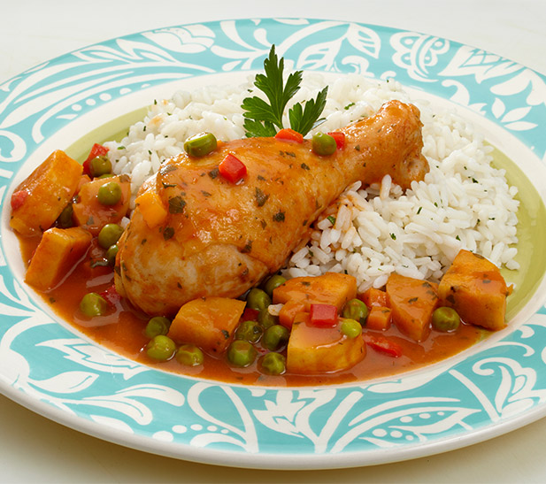

Cocina las papas en agua y sal hasta que estén blandas. Cola y muele hasta obtener un puré. Deja enfriar.
Añade la mantequilla y la Maizena y mezcla hasta obtener una masa lisa y homogénea. Reserva.
Separa porciones de masa y forma cordones. Córtalos en pedazos de 1,5 cm de largo y presiona levemente la superficie con la punta del dedo.
Vierte los ñoquis en una olla con agua hirviendo y cocina durante unos minutos.
Cuando suban a la superficie, retíralos y coloca en una fuente. Reserva.
En una olla, caliente la mantequilla a fuego medio y saltea la cebolla y el ajo hasta que doren.
Añade zanahoria y cocina por 3 minutos más.
Disuelve la Maizena en la leche y añade al salteado, mezclando constantemente hasta que espese.
Agrega el jamón, las arvejas y la sal y mezcla delicadamente.
Cubre los ñoquis con la salsa preparada y sirve inmediatamente.

ESTOFADO DE POLLO
INGREDIENTES
4 presas de Pollo sin Piel
1 cebolla Roja
3 cucharadas de LA ROJITA
1 cubo MAGGI Gallina
2 tomates Pelados y Picados
2 papas Amarilla
1/2 taza Arvejas, Cocidas, Sin Sal
1/2 taza de Zanahorias en Rodajas
1/4 de Taza de Aceite Vegetal
2 tazas de Agua
1 cucharadita de Ajo Molido
1 pizca de Sal
1 pizca de Pimienta
1 hoja De Laurel
PREPARACIÓN
Pelar y cortar la zanahoria en rodajas. Pelar y cortar la cebolla en pluma, los tomates y la papa en trozos.
Lavar, secar y salpimentar las presas de pollo. Freírlas en una olla con el aceite caliente. Retirarlas.
En la misma olla donde se doró el pollo, freír la cebolla junto con el ajo molido. Agregar un CUBO MAGGI GALLINA, 3 cucharadas de LA ROJITA y los tomates. Cocinar por 5 minutos.
Retornar las presas de pollo a la olla. Agregar 2 tazas de agua y cocinar por 5 minutos.
Agregar las arvejas, las zanahorias, la hoja de laurel y las papas cortadas por la mitad. Cocinar por 10 minutos más a fuego medio hasta obtener una textura más espesa.
Una vez listo, retirar la hoja de laurel. Servir acompañado de una taza de arroz.
CALDO DE MARISCO
INGREDIENTES
½ kilogramo de Camarón Crudo
4 filetes de Mojarra de granja
½ kilogramo de Surtido de Mariscos
4 unidades de Tomates
1 unidad de Cebolla
1 manojo de Cilantro
2 unidades de Chile Verde
4 unidades de Zanahoria
1 unidad de Apio
1 unidad de Chile morrón
1 unidad de Chile morrón
PREPARACIÓN
Hervir en una olla 4 litros de agua aproximadamente, con una cabeza entera de ajo, media ramita de apio, un trozo de cebolla y sal por 10 minutos.
Incorporar a la olla el camarón crudo. Dejarlo hasta que hierva y el agua tome un color rojizo, luego retirar, pelar y dejar aparte.
Por otro lado, se cocina el apio y la zanahoria. Reservar el agua de la cocción.
Agregar las cáscaras que se le quitaron al camarón y a la licuadora junto con el agua de su cocción, en este paso agregar también el apio y la zanahoria. Licuar hasta conseguir una crema más o menos uniforme. La cabeza de ajo se retira de la olla.
Echar la mezcla licuada de vuelta a la olla con la ayuda de un colador para evitar los huesos y cáscaras que no se hayan molido. Repetir el proceso si es necesario.
Echarle al caldo la zanahoria y el apio, que reservamos anteriormente, para que se cocinen junto con la mezcla de mariscos.
Para preparar el sofrito de nuestro caldo de mariscos, freír en una sartén el chile morrón, el chile verde y la cebolla hasta que esta última se haya cristalizado. Luego agregar el tomate picado hasta que suelte su jugo y por último agregar el tomate molido. De los 4 tomates de la receta, 3 se utilizarán picados y uno molido o licuado. El chile morrón también es conocido como pimentón o pimiento y el chile verde como ají.
Vaciar esta mezcla a la olla y dejarla hervir aproximadamente por 10 minutos. Luego echarle el cilantro y dejarlo por 3 minutos más para finalmente agregar el filete de pescado cortado en trozos y el camarón y dejar hervir por 5 minutos.
Servir muy caliente. Para elaborar esta receta de caldo de mariscos puedes utilizar cualquier marisco de tu elección.
SALMÓN AL HORNO
INGREDIENTES
Salmón fresco 4 filetes
1 cucharadita de perejil
1/2 copa de vino blanco
2 cucharadas de jugo de limón
Sal
Pimienta blanca
Paprika
Ajo en polvo
2 cucharada de aceite
1 cucharadas de mantequilla o margarina
Papel de aluminio
PREPARACIÓN
Colocar en una fuente el papel de aluminio y rociar con aceite, luego colocar los trozos de salmón.
Encima de este comenzar a agregar todos los aliños: sal, pimienta, paprika, ajo en polvo y perejil picado finito.
Rociar encima con limón y el vino blanco.
Colocar encima del salmón unos pequeños trozos de margarina.
Finalmente, tapar por completo con la ayuda del papel de aluminio el salmón.
Colocar al horno a 350°F (180°C) por 20 a 25 minutos.
Servir acompañado de puré de papas y porotos verdes a la mantequilla.
LASAÑA
INGREDIENTES
1 cebolla
500 gramos de mezcla de carne cerdo y vacuno molida
2 cucharas de aceite de oliva
Tomate frito
Harina y leche para bechamel
8 láminas de pasta para lasaña cocidas
Queso rallado para gratinar
PREPARACIÓN
Cortar la cebolla en trocitos pequeños y ponerla en la sartén para que se vaya haciendo; es el primer paso para hacer esta lasaña sencilla de carne.
Salpimentar la carne, añadirla a la sartén y seguir haciendo la mezcla mientras damos vueltas para que la carne se suelte bien.
Añadir el tomate al gusto y hacer un poco más el relleno de la lasaña sencilla y rápida.
Colocar en un recipiente las distintas capas. Empezar por una capa de pasta cocida, luego una capa del relleno y otra capa de pasta. Ir poniendo capas hasta terminar el relleno.
Colocar una capa de pasta y luego queso rallado, e introducir al horno con grill hasta que se dore completamente.
Esperar unos minutos antes de sacar la lasaña del molde para que no se escurra. ¡Y listo!
 Cocina Mágica
Cocina Mágica